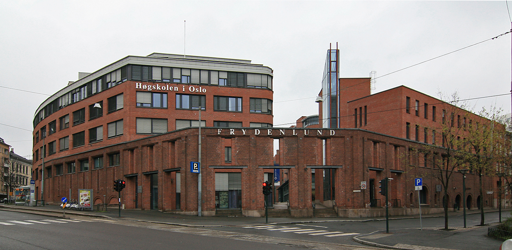

HIOA
Bildet er tatt i går trorlrolrolo
John`s bar er en av de mest populære barene i oslo. Sette er stedet for unge til å være, 20 års aldersgrense alle dager utenom torsdagen da det er 18. Et sted å møte venner for en drink eller kanskje fem! De er Norge mest populære afterski bar, uten skibakke i nærheten. Med John`s, det er alltid god musikk. De spiller alt fra 80-talls musikk til Rock 'n Roll.
Fubar

Fubar sin logo
"Fu bar" er en student bar for Westerdals Oslo ACT i teknologi divisjonen og det naturlige vannhullet for enhver student i området, på grunn av sine lave priser på øl! Mest sannsynlig den billigste ølen du kan kjøpe på en bar i Oslo. Fu bar arrangerer også arrangement som "Oktoberfest" og "Halloween party". Det finnes også et par konkurranser som quiz og beerpong. Fu bar er stedet å være!
Lawo

Dette er Lawo
Lawo er en populær pub i Oslo som er åpent på tirsdager, fredager og lørdager. Lawo ble åpnet i april 2012 og i 2013 Lawo åpnet en bar utenfor for studenter. Du kan leie Lawo hvis du er interessert i å ha en fest eller et Julebord
Lawo er en populær pub i Oslo som er åpent på tirsdager, fredager og lørdager. Lawo ble åpnet i april 2012 og i 2013 Lawo åpnet en bar utenfor for studenter. Du kan leie Lawo hvis du er interessert i å ha en fest eller et Julebord
Jonhs bar

velkommen til John`s bar
John`s bar er en av de mest populære barene i oslo. Sette er stedet for unge til å være, 20 års aldersgrense alle dager utenom torsdagen da det er 18. Et sted å møte venner for en drink eller kanskje fem! De er Norge mest populære afterski bar, uten skibakke i nærheten. Med John`s, det er alltid god musikk. De spiller alt fra 80-talls musikk til Rock 'n Roll.
Slottsparken

Dammen Kongespeilet ligger i Dronningparken som er en del av Slottsparken bak Slottet.
Slottsparken er Oslo sin sentrale bypark. Parken ligger rundt det kongelige slott og slottsplassen. Parken består av store plener under høye trær, gangveier, alléer og anlagte vannspeil. Slottsparken er et vernet kulturminne, og forvaltes av Slottets gartnere. En del av parken som kalles Dronningparken og er et område som ble etablert som park allerede i 1751.
Frognerparken

Bildet er av frognerparken
Addresse: Kirkeveien, 0268 Oslo Største parken i Oslos sentrale byområde, som gjør det til en av de største og kjente attraskjonene. Du finner blant annet Norges største rosesamling her, som tilsvarer 14 000 planter fordelt på 150 ulike arter. Men det som skiller seg mest ut og gjør det til en så populær attraksjon er pga vigelandsparken. Dette er en av Norges og oslos mest besøkte attraksjoner, med rundt 1 million besøkende hvert år. Parken består av mange statuer og skulpturer, over 200. Noen av de som er verdt å nevne er, sinnataggen, monolitten og livshjulet.
Akershus Festning

Akerhus festning sett fra Oslofjorden.
Adresse: 0103 OSLO. Akerhus festning er en av de viktigste festningene i Norges historie, og er i dag sett på som et nasjonal symbol. Akerhus festning ble bygget som en midelaldersk kongeborg i 1299. På 1600-tallet ble den bygget om til et renessanseslott omgitt av en bastionfestning. Borgen, som senere ble Akershus festning, ble et avgjørende forsvarsverk for Norge gjennom flere epoker. I over fire hundre år motstod den beleiringer og angrep på landets styre.
Slottet

Hver nasjonaldag siden 17. mai 1906 har den norske kongefamilien stått på slottsbalkongen og hilst osloskolenes elever i barnetoget som marsjerer over Slottsplassen.
Adresse: Slottsplassen 1, 0010 Oslo. Det kongelige slott i Oslo er der den norske kongefamilien bor. Slottsparken omgir palasset på alle sider og funksjoner grasområder, majestetiske trær, små dammer og statuer. Deler av slottet er åpent for publikum i sommermånedene. Fra øst løper paradegaten Karl Johans gate rett mot Slottets hovedfasade og er den formelle adkomst til Slottet ved høytidelige anledninger.
Munch Museet

Munchmuseet på Tøyen i Oslo. Arkitekt Einar Myklebust og Gunnar Fougner.
Adresse: Tøyengata 53, 0578 Oslo. Munchmuseet er et kunstmuseum i Oslo som inneholder Edvard Munchs etterlatte arbeider som han testamenterte til Oslo kommune i 1940. Museet åpnet dørene for publikum i 1963, hundre år etter maleren og grafikerens fødsel. Bildet finnes i fire originalversjoner, hvorav to tilhører Munch-museet, ett Nasjonalgalleriet har og det siste ble auksjonert bort til en ukjent kjøper i 2012. “Skrik” er et av Edvard Munchs mest berømte bilder, og en av Norges sentrale kunstskatter.
Aker Kirke

Den har adresse Akersbakken 26 og ligger ved Telthusbakken, for enden av Akersveien, og er i dag sognekirke for Gamle Aker menighet.
Gamle Aker kirke er den eldste byggningen i Oslo. Aker kirke er nevnt i 1080 som fylkeskirke for Vingulmark. Oslo Byleksikon mener at dette er dagens kirke, og at den kan være bygd av kong Olav Kyrre. Andre kilder daterer kirken til første del av 1100-tallet. Stilhistoriske kriterier tilsier at dagens Gamle Aker kirke ble påbegynt tidligst på begynnelsen av 1100-tallet. Kirken det vises til i 1080 var etter alt å dømme en trekirke som sto på stedet før dagens kirke ble reist.
Nobels Fredssenter